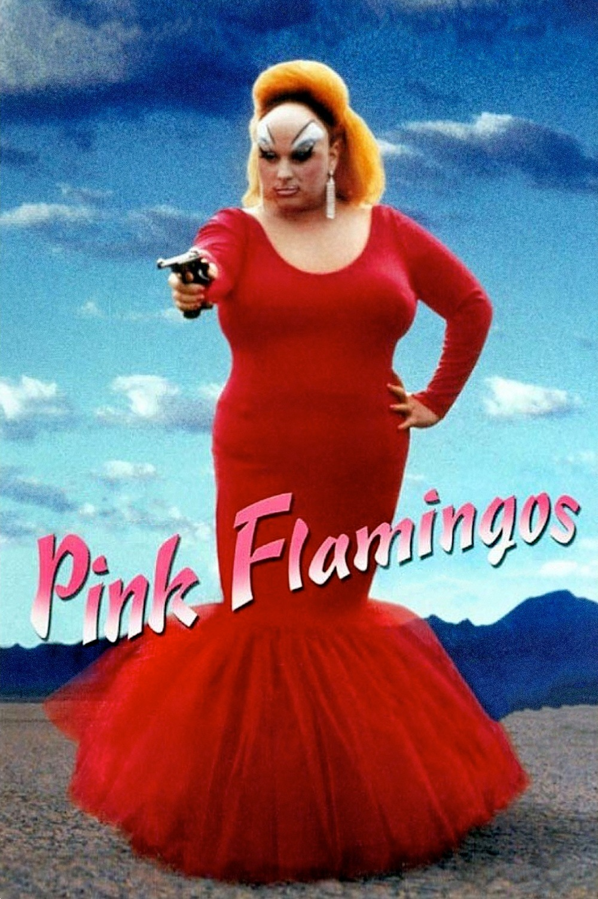
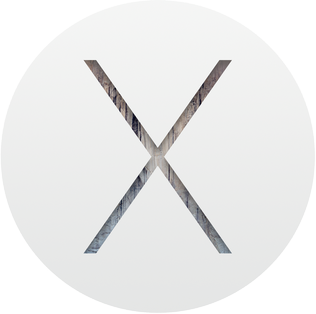

Comparing
Mobile
API Frameworks
(Navigate using your keyboard left & right arrows)
/api/users/me.json
{
name: 'Michael Carroll',
hats: [ 'RubiconMD',
'Aqua.io',
'Cornell Tech (Pushcart)' ],
background: [ 'Chinese philosophy',
'book editor',
'Rama (travel app)' ]
}
Comparing
Mobile
API Frameworks
TASTE
(a quick aside)
Who is the better artist?

Da Vinci
vs
Caravaggio
Caravaggio
(Da Vinci was the "USA Today" of Renaissance artists)
The better French philosopher?
Sartre
vs
Derrida
Both whiners!
(Pick a German instead, like Kant or Wittgenstein.)
Better OS?

OSX
vs

Linux
Choice between 'enlightened dictatorship' or 'socialism with Torsvaldsian characteristics'?
(I'm indifferent. Just be happy we aren't stuck with just one or the other.)
The point being?
- "Comparison" exercises can easily fall into a solipsistic morass of mere preference
- There is value in analyzing individual systems as a taste-making exercise
- Even if there's no "right answers", there certainly are "superior solutions"
- Confident, but ever-evolving taste is more important for a CTO than technical skills
- My go-to framework is Rails, but I'm happy to trash talk your preferred framework in the Q&A
Comparing
Mobile
API Frameworks
Mobile development:


- Writing software for a specialized OS/VM
- Arcane, non-intuitive APIs
- Must use a "native" programming language most people hate (& often lives only for this platform)

front-end + back-end
⬇
apps + API server
Some benefits of this paradigm:
- one public, documented API for everything
- open sourcing of frontends/apps
- no more integration testing!
Comparing
Mobile
API Frameworks
~~~ or ~~~
Michael Evangelizes
Ruby on Rails
as an API Server
gem 'rails'
- Opinionated -- convention over configuration
- Ruby & Rails communities
- RESTful by design
# routes.rb
MichaelsPicks::Application.routes.draw do
resources :films
end
REST (Representational State Transfer)
- Intuitive convention for CRUD over HTTP(S)
- Lets HTTP verbs do all the talking
- Know resource name, know how to manipulate it
$ rake routes | grep 'film'
GET /films(.:format) films#index
POST /films(.:format) films#create
GET /films/:id(.:format) films#show
PUT /films/:id(.:format) films#update
DELETE /films/:id(.:format) films#destroy
Why REST JSON APIs?
- Server is 'stateless' (no client context storage)***
- Easier caching (!= not easy caching)
- Lots of interface libraries (Angular, iOS, Android)
- JSON is lightweight
- Easy to document & unit test!
ABC
- Always
- Be
- Comprehensively testing and documenting the living hell out of your API
- With REST APIs, integration tests are recyclable (X request returns Y JSON response)
- Document what's important enough to test; test what you document
- A little pain and investment in doing this from the beginning saves a lot of time later (in knowledge transfer)
JSON Views
class FilmsController
def index
@films = Film.all
end
def show
@film = Film.find params[:id]
end
end
Don't dump it all to JSON!
class FilmsController
def index
@films = Film.all.to_json #No.
end
def show
@film = Film.find(params[:id]).to_json #STOP IT!
end
end
Instead use a JSON templating system, just like with HTML views.
gem 'rabl'
- Share helper methods (like date formatters)
- Re-use partials
- Keep it readable
Best templating systems even automatically generate XML (in case the developers you work with are masochists)
# views/films/show
object @film
attributes :id, :title, :synopsis, :comments
child :imdb_metadata
node (:date_picked) { |i| date_picked(i.created_at) }
# views/films/index
collection @films
extends "views/films/show"
Before you run off and start coding...
Consider the following index response:
// GET /films
[{
id: 1,
title: "Unforgiven",
synopsis: "Clint Eastwood is a cowboy. People die.",
comments: "After watching this movie,
my wife began writing a hate e-mail
to Gene Hackman -- that's how good it is."
imdb_metadata: {
director: "Client Eastwood",
screenplay: "David Peoples",
actors: [
"Clint Eastwood",
"Ed Harris",
"Morgan Freeman",
"That guy that played
Dumbledore in the first
two Harry Potter films.",
...
]
}
},
...
Index action is slow to load
Don't need the imdb_metadata to populate our index table anymore, so we remove it and...
Insanity ensues!
- Old iOS app was listing "director" in the menu.
- Only 40% of users upgraded to new version.
- Users on the old version start leaving angry reviews about broken app.
Shitty dilemma: Slow for all vs. broken for some?
Versioning to the rescue!
gem 'versionist'
- Manages route versioning
- Copies your views to new files
- Allows for scoping of logic
# routes.rb
# /films
resources :films
# becomes api/v1/films
api_version(module: "api/v1", path: {:value => "v1"}) do
resources :films
end
# controllers/films_contoller.rb
class FilmsController
...
end
# becomes controllers/api/v1/films_contoller.rb
class Api::V1::FilmsController
...
end
Versioning means a lot more code and outmoded logic in your project...
but it also means never having to say "we can't change that because it might break something" (unless it's a convenient excuse you want, of course).
Summary
- Use framework with REST baked in
- API should be stateless
- ABC
- JSON templating
- User versioning from get-go
- Pick a language with the right dev community!
{
github: 'https://github.com/mikecarroll',
email: 'michael@carroll.io',
twitter: '@_mcarroll_'
}